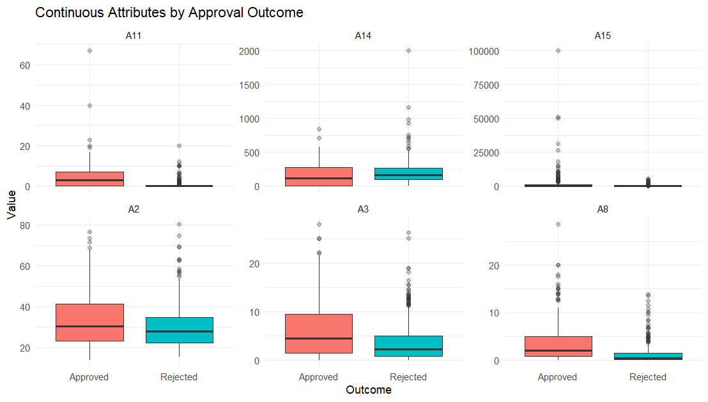
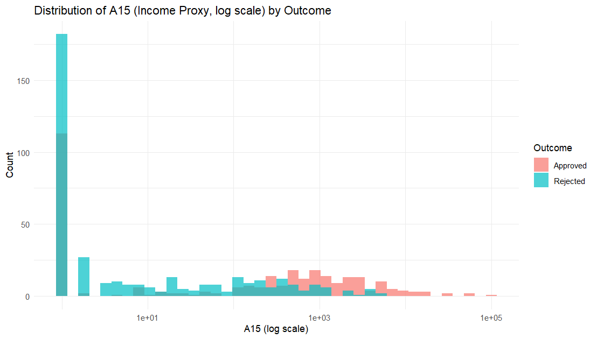
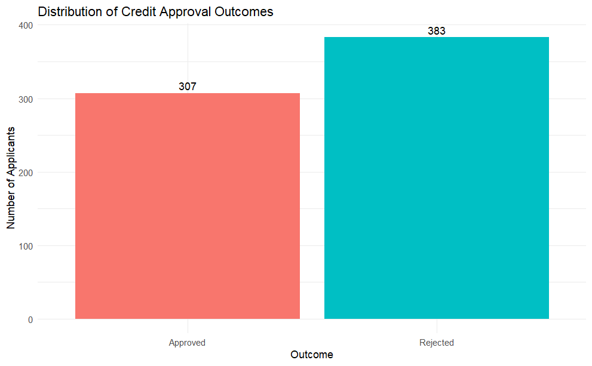
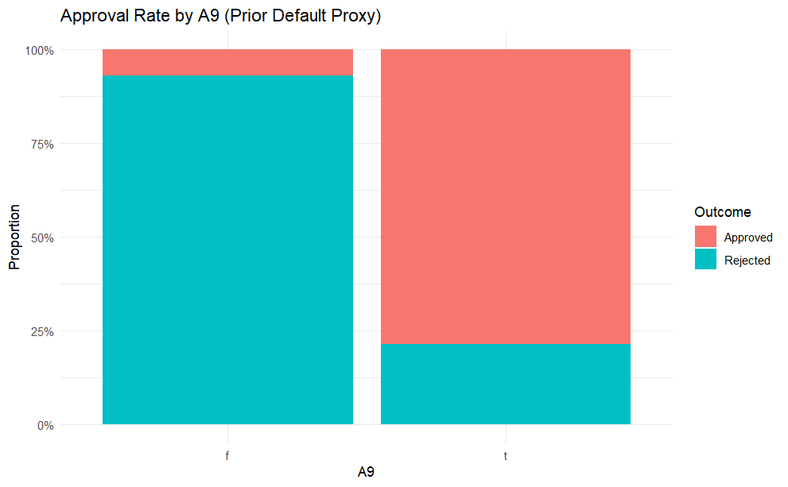
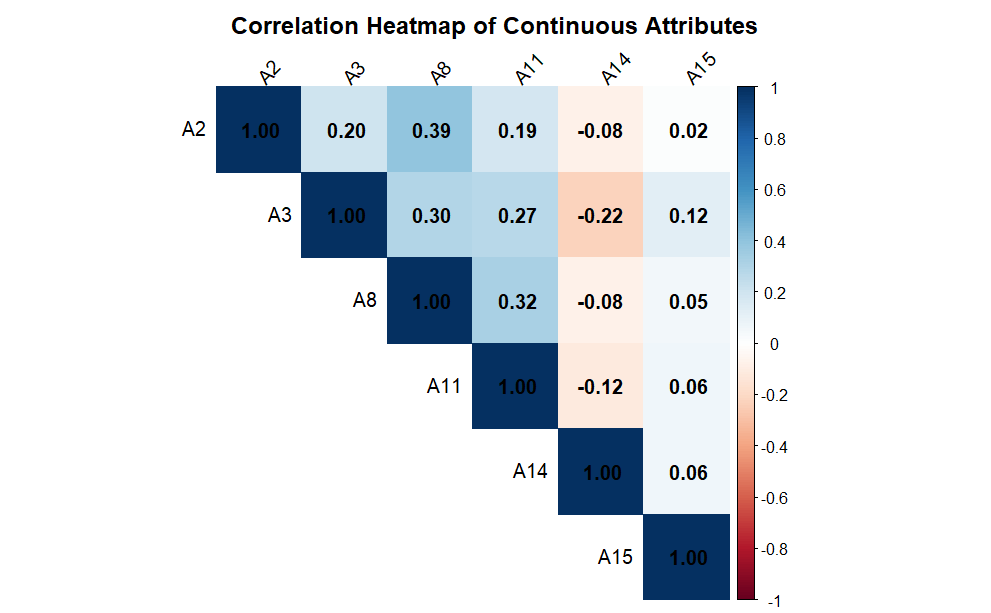
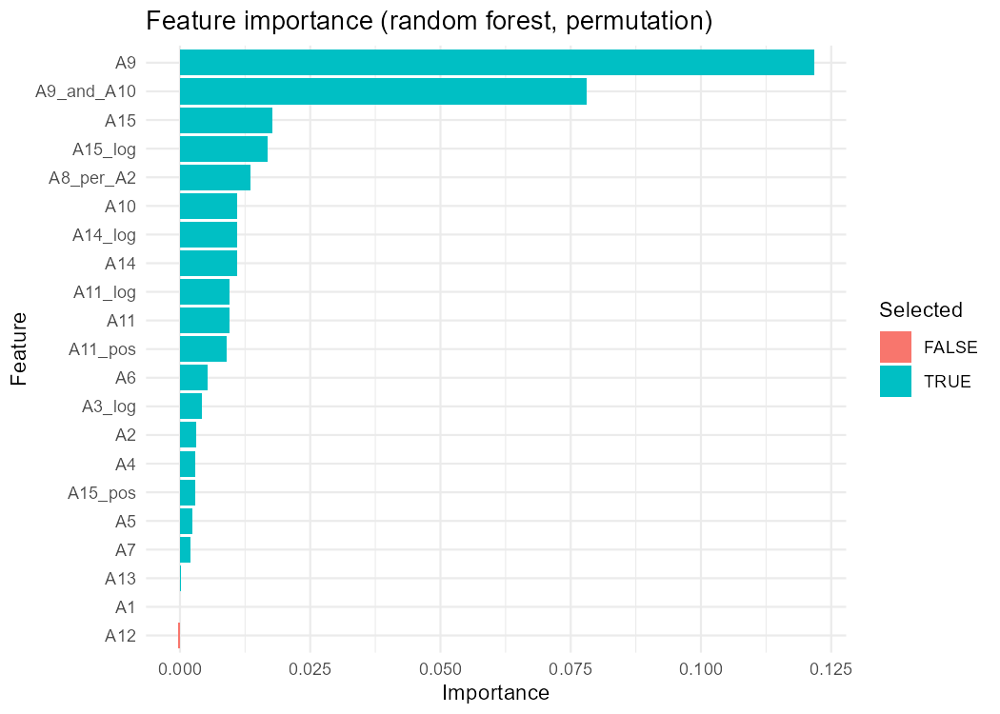
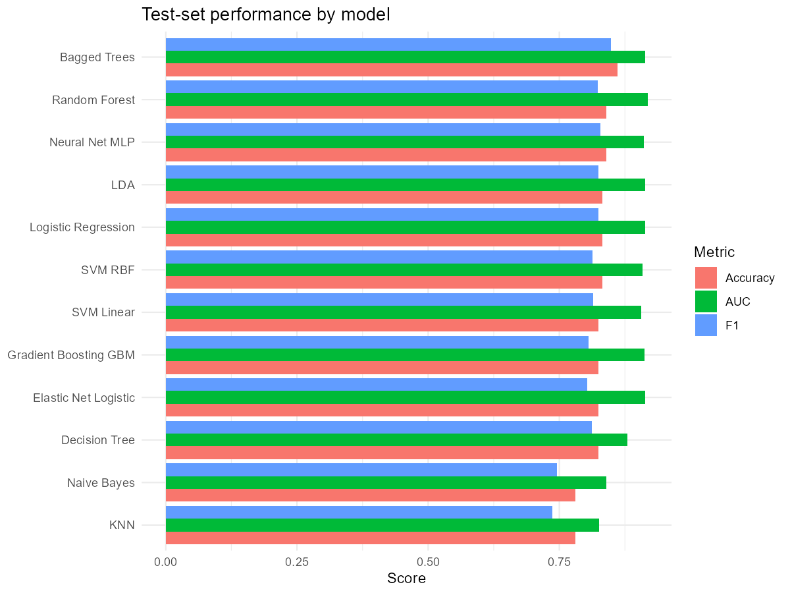
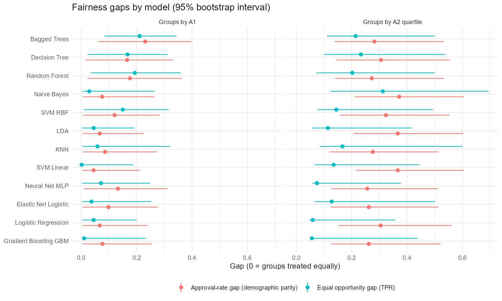
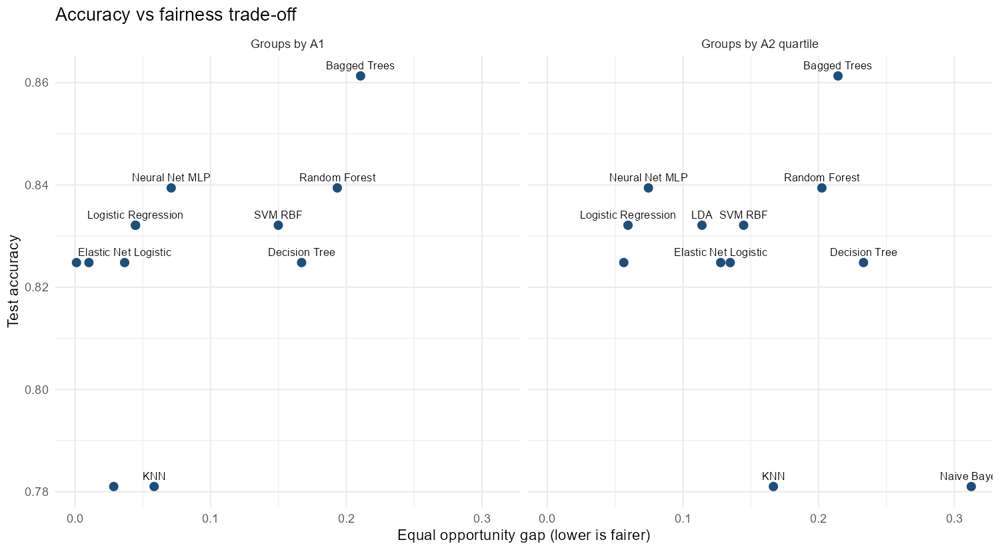
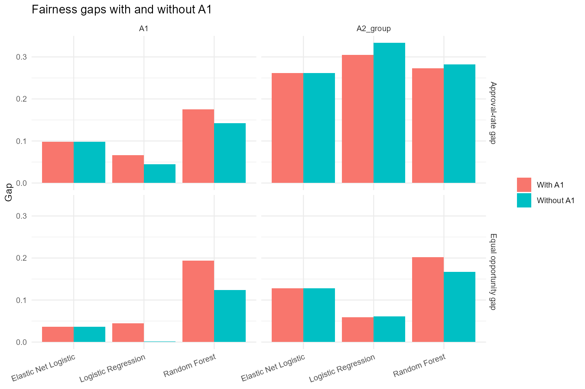

An end-to-end framework integrating relational database engineering, 12 supervised machine learning classifiers, rigorous bootstrap/permutation fairness auditing, and an interactive Shiny decision cockpit.
Balancing predictive accuracy and demographic fairness in automated financial decision systems.
Automated credit evaluation improves underwriting velocity and objective consistency, but carries the severe risk of amplifying historical discrimination against vulnerable applicant cohorts. This project tackles both frontiers simultaneously using the benchmark UCI Credit Approval Dataset:
A1 mitigates bias or leaves disparities intact due to proxy encoding.Understanding distributions, missingness patterns, and core predictive signals in raw credit applications.
The UCI Credit Approval dataset comprises 690 applicant records across 15 anonymized attributes (A1 through A15) and a binary outcome A16 (+ approved, - rejected). Because the attributes were masked for privacy, standard banking proxies are applied:
| Attribute | Type | Banking Proxy Interpretation |
|---|---|---|
A1 | Categorical (a, b) | Applicant demographic / gender proxy |
A2 | Continuous | Applicant age proxy |
A3 | Continuous | Debt / existing liabilities |
A8 | Continuous | Credit history length |
A9 | Binary (t, f) | Prior default / credit bureau record |
A10 | Binary (t, f) | Employment status proxy |
A15 | Continuous | Applicant income proxy |
A16 | Target (+ / -) | Credit approval decision (307 approved, 383 rejected) |





1. Class Balance: With 44.5% positive labels, the target is well-balanced, eliminating the need for synthetic oversampling (SMOTE).
2. Missing Values: Preprocessing utilized median imputation for continuous attributes (A2, A14) and mode imputation for categorical attributes (A1, A4, A5, A6, A7), avoiding data leakage by computing statistics strictly on the training partition in DA2.
3. Dominant Signal: Attribute A9 exhibits massive predictive power, serving as an operational proxy for clean credit bureau records.
Enterprise data modeling in SQLite and Random Forest permutation importance feature selection.
To adhere to relational database normal form and emulate financial production infrastructure, the dataset was normalized into two relational tables in SQLite (credit.db):
applicants: id (PK), a1-a15 applicant attributes.decisions: id (FK referencing applicants(id)), outcome.Analytical SQL queries were executed via DBI, calculating group approval percentages, missingness tallies, and parameterized customer queries.
To capture non-linear banking relationships, the raw table was retrieved via SQL and transformed:
log1p(A3), log1p(A8), log1p(A11), log1p(A14), log1p(A15) to compress long-tailed monetary values.A11_pos and A15_pos flags to separate zero-inquiry/zero-income applicants.A8_per_A2 (credit history length normalized by applicant age).A9_and_A10 (both credit history and employment flags positive).A2_group (training quartile binning Q1-Q4 for fairness auditing).
1. Near-Zero Variance: nearZeroVar identified no zero-variance predictors.
2. Correlation Pruning: findCorrelation(cutoff = 0.90) evaluated collinearity.
3. Permutation Importance: Features with positive permutation importance were retained. Notably, demographic attribute A1 ranked 20th with negligible importance (0.000044), while A12 exhibited negative importance (-0.000407) and was discarded.
Systematic comparison of classification architectures using repeated 5-fold cross-validation.
All models were trained using identical cross-validation folds (5-fold cross-validation repeated 2 times) to ensure an equitable benchmark. Centering, scaling, and zero-variance preprocessing were applied inside each fold to avoid data leakage.
| Model Algorithm | Test Accuracy | Precision | Recall | F1 Score | Test AUC | CV AUC |
|---|---|---|---|---|---|---|
| Random Forest Top Model | 0.839 | 0.810 | 0.836 | 0.823 | 0.918 | 0.939 |
| Elastic Net Logistic | 0.825 | 0.803 | 0.803 | 0.803 | 0.914 | 0.938 |
| Linear Discriminant Analysis (LDA) | 0.832 | 0.771 | 0.885 | 0.824 | 0.914 | 0.932 |
| Bagged Trees | 0.861 | 0.828 | 0.869 | 0.848 | 0.914 | 0.922 |
| Logistic Regression | 0.832 | 0.771 | 0.885 | 0.824 | 0.913 | 0.912 |
| Gradient Boosting (GBM) | 0.825 | 0.794 | 0.820 | 0.806 | 0.912 | 0.949 |
| Neural Network (MLP) | 0.839 | 0.791 | 0.869 | 0.828 | 0.911 | 0.924 |
| Support Vector Machine (Radial) | 0.832 | 0.806 | 0.820 | 0.813 | 0.908 | 0.929 |
| Support Vector Machine (Linear) | 0.825 | 0.768 | 0.869 | 0.815 | 0.906 | 0.928 |
| Decision Tree (CART) | 0.825 | 0.776 | 0.852 | 0.812 | 0.880 | 0.907 |
| Naive Bayes | 0.781 | 0.772 | 0.721 | 0.746 | 0.840 | 0.880 |
| K-Nearest Neighbors (KNN) | 0.781 | 0.792 | 0.689 | 0.737 | 0.826 | 0.903 |

Evaluating demographic parity and equal opportunity across applicant groups with non-parametric bootstrap intervals.
A rigorous audit cannot rely on a single fairness criterion. Four complementary mathematical fairness measures were evaluated across A1 (binary demographic proxy) and A2_group (age quartiles Q1–Q4):
Because test cohorts in credit datasets are inherently finite ($N=138$), raw gap metrics can be deceptively noisy. Two inferential testing procedures were deployed:


Does the top-ranked Random Forest model statistically outperform regularized logistic regression? Two paired tests were performed on the exact same 138 test applicants:
| Model Pair | AUC Diff | DeLong p (adj) | McNemar p (adj) | Verdict |
|---|---|---|---|---|
| RF vs Logistic Regression | +0.005 | 1.000 | 1.000 | Statistically Tied |
| RF vs Elastic Net | +0.003 | 1.000 | 1.000 | Statistically Tied |
| RF vs LDA | +0.004 | 1.000 | 1.000 | Statistically Tied |
| RF vs Bagged Trees | +0.004 | 1.000 | 1.000 | Statistically Tied |
| RF vs Naive Bayes | +0.077 | 0.043* | 0.963 | RF Significantly Better |
| RF vs KNN | +0.092 | 0.005** | 0.631 | RF Significantly Better |
Crucial Insight: Because the DeLong and McNemar adjusted p-values exceed 0.05 across all top 8 models, an institution can deploy fully interpretable Elastic Net Logistic Regression without any statistically significant sacrifice in predictive power.
Testing whether omitting the protected attribute eliminates disparities or merely blinds the auditor.
A frequent heuristic in lending is "fairness through unawareness" — simply removing sensitive demographic features (like gender or race proxy A1) from the training set. Three representative architectures were retrained with and without A1 on identical cross-validation folds:
| Model Architecture | A1 Status | Test Accuracy | Equal Opp Gap (A1) | Decision Flips (%) |
|---|---|---|---|---|
| Logistic Regression | With A1 | 83.2% | 0.045 | 0.7% (1 flip) |
| Without A1 | 83.2% | 0.001 | ||
| Elastic Net Logistic | With A1 | 82.5% | 0.037 | 0.0% (0 flips) |
| Without A1 | 82.5% | 0.037 | ||
| Random Forest | With A1 | 83.9% | 0.193 | 1.5% (2 flips) |
| Without A1 | 83.2% | 0.124 |
Conclusion: Removing A1 changed at most 1.5% of decisions (only 2 out of 138 applicants) and had negligible effect on Elastic Net. The remaining features (prior default, debt, income) strongly proxy the demographic attributes, demonstrating that superficial unawareness does not eliminate structural bias.

A web-based interactive auditing tool built with R Shiny and Plotly for real-time model governance.
# Launch directly from R console:
shiny::runApp()
# Or from project dashboard directory:
shiny::runApp("da3_dashboard")
1. Base Rate Disparity: Qualified approval rates differ naturally across groups in historical data. Therefore, Equal Opportunity (equal TPR among deserving applicants) is mathematically preferable to enforced Demographic Parity.
2. The Rashomon Effect: Because 8 distinct model families achieve near-identical predictive utility (AUC ~0.91), credit institutions have the regulatory freedom to choose the model with the best interpretability and smallest fairness gap.
3. The Fallacy of Unawareness: Excluding protected columns gives false regulatory assurance while proxy variables continue to perpetuate historical disparities.